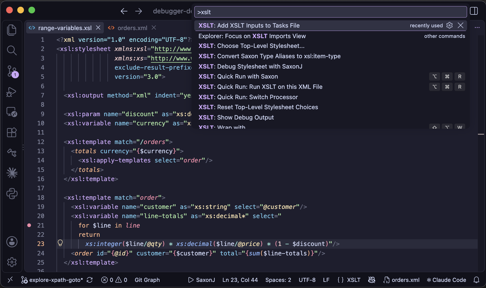
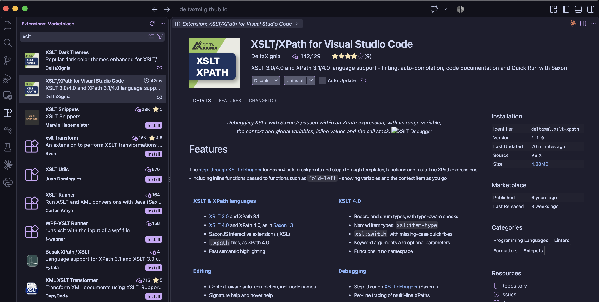

Using VS Code
These pages complement the extensive Visual Studio Code documentation that begins:
Visual Studio Code is a lightweight but powerful source code editor which runs on your desktop and is available for Windows, macOS and Linux. It comes with built-in support for JavaScript, TypeScript and Node.js and has a rich ecosystem of extensions for other languages...
The User Interface
Visual Studio Code's user interface has a different look and feel to that of legacy XSLT editors. The Command Palette, along with keybindings to most common commands, play a significant role in providing a clearer environment to work in. User interface clutter is significantly reduced by eschewing previous designs which depended on a set of toolbars, each with an abundance of buttons.
The application menu bar and associated dropdown menus usefully group the more essential actions for managing your code. The View menu is particularly useful as it logically sets out the large set of view-configuration commands.
The sections below introduce you to the fundamental parts of the user interface from the perspective of an XSLT/XPath developer.
The Command Palette
A principal part of Visual Studio Code's user interface is the Command Palette, triggered by the keyboard shortcut ⇧⌘P. The Command Palette shows all available commands in a dropdown list. The list of commands is filtered as you type. The most recently used commands are shown at the top of the list.

Opening Workspace Files
The File: Open Folder command is used to select the starting 'Workspace' folder to be used by VS Code. More folders can be added to the Workspace subsequently using the Workspaces: Add folder to workspace command. The keyboard shortcut ⌘P provides quick-access to all Workspace files from a pick-list. 'Fuzzy-matching' allows you to type in just a part of the filename to filter the pick-list files.
Keyboard Shortcuts
While the Command Palette provides convenient access to features you should find that keyboard
shortcuts are
more effective for commands you use most
frequently.
The keyboard shortcut for commands is shown alongside each listed command in the Command Palette.
Not all
commands
have key bindings, but these can be configured using the command
Preferences: Open Keyboard Shortcuts
(⌘K⌘S). See:
Key Bindings for Visual Studio Code
Settings
By adding or modifying Visual Studio Settings, using the Preferences: Open User Settings
command,
you can customize a range of editor and extension features to meet your needs.
See the Settings section for details on some of the more important
settings for
developing in XSLT and XPath.
Install the XSLT/XPath Extension
Extensions are managed in the Extensions view (⇧⌘X) of the Side Bar.
Type XSLT XPath in the Extensions view search bar and, on the XSLT/XPath for
Visual Studio
Code entry, press the install button.

Color Theme Extensions
Visual Studio Code includes a small set of light and dark color themes. Alternative color themes are installed as extensions. The number of available themes can be overwhelming, but VS Code has a built-in Theme Preview feature and there are websites like vscodethemes that provide a preview before installing the theme.
The XSLT Dark Themes extension provides a set of popular dark color themes specially enhanced for XSLT and XPath
Viewing HTML Output
When your XSLT generates HTML, you can view the result in Visual Studio Code's
integrated browser, with no
extension needed. When a transform writes an HTML result file, the notification that the task has completed
has an Open in Browser button, as well as Open for the file's source. You can
also choose Open in Integrated Browser from the editor title bar of an HTML file, or from its
context menu in the Explorer. With the
workbench.browser.autoReloadOnFileChange setting, the page reloads each time the transform
writes the result file again - so you can edit the stylesheet, run it with
Quick Run, and see the updated output alongside the XSLT.